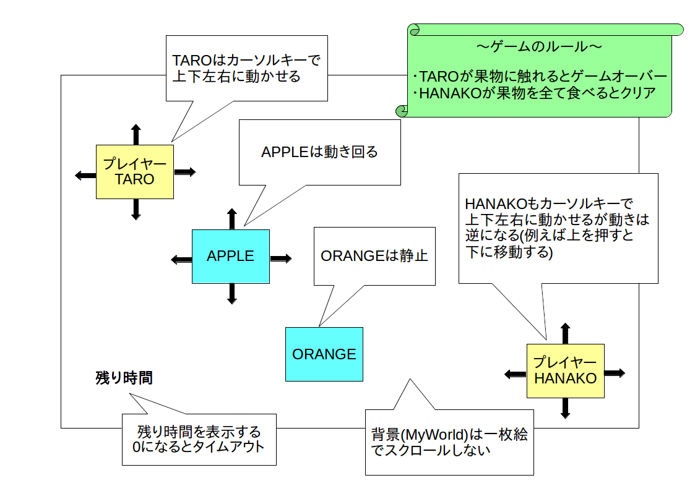

※ クリックすると図だけ表示します。

「スクラム開発」は反復型開発手法の一種で、オブジェクト指向型プログラミングを用いたソフトウェア開発ととても相性が良い手法なので広く使われています。
今回は簡易化したスクラム(※)を使ってミニゲームを開発することでオブジェクト指向開発の流れを実際に体験してみようと思います。
※ 本格的なスクラム演習はこちらで行います
ここではまず「リリースプランニング(全体計画)」を行います。
リリースプランニングはスクラムの最初に実施する作業工程で、要求定義、全体仕様書の作成、プロダクトバックログや WBS の作成を行います。
「要求定義」とは、クライアントがソフトウェアを使って何をしたいのかを明確にするためにソフトウェア開発の初期段階でおこなう作業のことです。
具体的には「要求仕様書」というドキュメントを作成します。
要求仕様書の書き方には特に決まり事はないのですが、最低限でも以下の項目は含めた方が良いと思います。
また図などが含まれていると分かりやすくなるのでより良いと思います。
さて今回の演習では以下の様な要求仕様書を作成しました。
| 目的 | 暇つぶし用のミニゲームを作成する |
| 対象ユーザ | 老若男女 |
| システム構成 | OS: Windows 又は Linux 開発環境: Greenfoot 又は Unity2D |
| 概要 |
・PC 上で動く 2 次元アクションゲームとする
・タッチスクリーンやマウスではなくキーボードで操作する ・画面上に TARO と HANAKO というキャラクターと複数の果物を表示する ・ユーザ操作により TARO と HANAKO は同時かつ別方向に動く ・TARO が果物に触れたらゲームオーバー ・HANAKO が制限時間内に画面上の全ての果物を食べたらゲームクリア |
次に「全体仕様書」を作成します。
具体的には要求仕様書で曖昧だった部分をある程度詳細に決めてドキュメント化していきます。
さて全体仕様書の書き方も特に決まり事はないのですが、今回は以下の様な全体仕様書を作成しました。
・背景(MyWorld と名付ける)は一枚絵とする
・TARO の初期位置は画面左上
・HANAKO の初期位置は画面右下
・TARO はカーソルキーで上下左右に動かせる
・HANAKO もカーソルキーで上下左右に動かせるが動きは逆になる(例えば上を押すと下に移動する)
・TARO と HANAKO 間に当たり判定は無い(スレ違い可能)
・TARO と HANAKO は画面外に移動できない
・TARO が果物触れたらゲームオーバー
・HANAKO が果物に触れたら触れた果物を消す
・HANAKO が画面上全ての果物を消したらゲームクリア
・時間制限を設け、時間内に全ての果物を消せなかったらタイムアップ
・果物には APPLE と ORANGE がある
・APPLE と ORANGE はランダムな位置に複数表示する
・APPLE はランダムに動く
・ORANGE は静止している
また大まかなクラス設計もこの段階でしておくと今後の見通しが良くなると思います。
今回は次の様にクラス設計をしてみました。
| クラス名 | 内容 |
|---|---|
| MyWorld |
・背景
・キャラクター配置やタイマーなどのマネージャー処理 |
| HUMAN |
・TARO と HANAKO のスーパークラス
・キーボード操作 ・当たり判定 |
| TARO |
・プレイヤーキャラ 1
・HUMAN の当たり判定をオーバーライド |
| HANAKO |
・プレイヤーキャラ 2
・HUMAN のキーボード操作をオーバーライド |
| FRUIT |
・APPLE と ORANGE のスーパークラス
・特に何もしない |
| APPLE |
・果物キャラ 1
・ランダムに動く |
| ORANGE | ・果物キャラ 2 |
なおウォーターフォール開発の場合は後戻りできないので、この段階で画面サイズとか表示メッセージとかの細かい項目や詳細なクラス設計などを全て完全に決める必要があります。
一方、スクラム開発の場合は仕様変更が頻繁に起こるので、この段階ではそこまできっちり決める必要はありません。
したがって今回は細かい項目や詳細なクラス設計についてはスプリントの中でその都度柔軟に考えていきたいと思います。
ところで上のような文章だけだと分かりにくいので図も全体仕様書に付け加えると良いと思います。
全体仕様書に使われる図には色々な種類がありますが、今回は以下の様な画面仕様図を描いてみました。

全体仕様書を元に、さらに細かく作業内容別に分けて「タスク」を作成します。
さらに各タスクの優先度、担当者などを決めてリスト化します。
この様にして作成したタスクリストを「プロダクトバックログ」と呼びます。
プロダクトバックログを作成したら各タスクの優先度に従って開発スケジュールを決めるのですが、スケジューリングの際に「WBS (Work Breakdown Structure: 作業分解構成図)」を利用すると便利です(※)。
※ ちなみに WBS を使ってきっちりスケジューリングするのはウォーターフォール的思考なので止めたほうが良いという意見もあります。
プロダクトバックログや WBS の書き方にも特に決まり事はないのですが、今回はクラス構造とプロダクトバックログとガントチャートを一体化した WBS を以下の様に作成してみました。